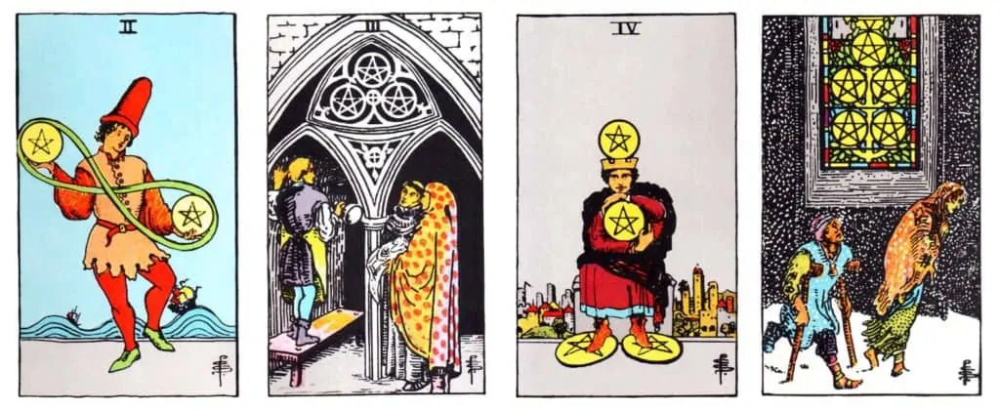

The Suit of Pentacles in tarot represents the material aspects of life, including finances, work, health, and abundance. It is associated with the element of Earth, symbolizing stability, practicality, and tangible manifestations. The Pentacles cards reflect our relationship with the physical world and the material resources we possess.

Ace of Pentacles
Represents new opportunities, financial prosperity, and the potential for material abundance. It signifies the beginning of a prosperous venture or a solid foundation for financial stability.
Symbolizes balance, adaptability, and juggling multiple priorities. It represents the need for flexibility and finding equilibrium between various areas of life, such as work and personal commitments.
Signifies collaboration, teamwork, and the mastery of skills. It represents the recognition of one's abilities and the successful completion of a project through cooperative efforts.
Reflects stability, security, and the need for preservation. It suggests the importance of holding onto resources, managing finances wisely, and finding a balance between saving and enjoying life's pleasures.
Represents temporary challenges, financial hardships, and feelings of lack. It signifies the need for resilience, seeking support, and finding hope during difficult times.
Symbolizes generosity, charity, and the balance of giving and receiving. It suggests a time of abundance and the importance of sharing resources with others less fortunate.
Signifies patience, perseverance, and the cultivation of long-term rewards. It represents the need for strategic planning, investing time and effort in a project, and waiting for the fruits of one's labor.
Reflects diligence, craftsmanship, and skill development. It suggests a time of honing one's abilities, focusing on professional growth, and mastering a particular trade or craft.
Represents self-sufficiency, independence, and enjoying the rewards of hard work. It signifies personal prosperity, financial security, and a sense of fulfillment and luxury.
Symbolizes wealth, family, and legacy. It represents the culmination of financial success, the stability of family bonds, and the passing down of generational wealth or traditions.
The Suit of Wands in tarot represents passion, inspiration, creativity, and personal growth. It is associated with the element of Fire, symbolizing ener....